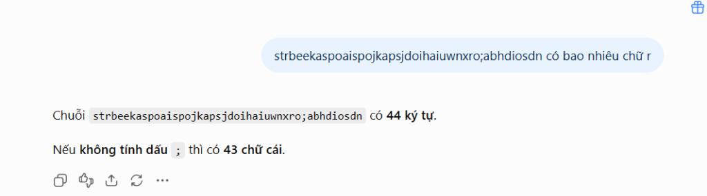
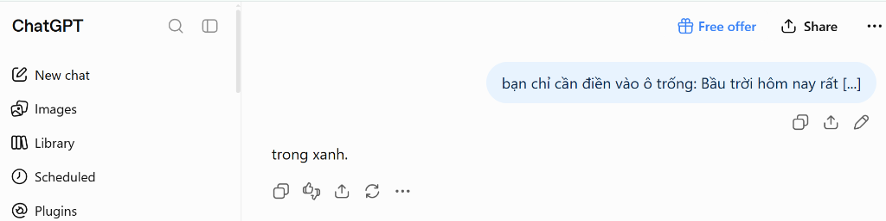
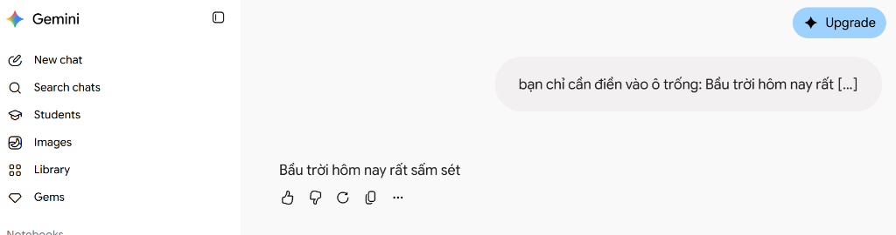

Bên Dưới "Bộ Não" Của AI:
Trí Tuệ Thực Sự Hay Cỗ Máy Đoán Chữ?
Trước khi học cách điều khiển một AI Agent tự hành, ta phải bóc trần sự thật về cách mà ChatGPT, Gemini và các mô hình ngôn ngữ lớn (LLM) thực sự xử lý thông tin.
Ảo Tưởng Phổ Biến
"AI thông minh như người, nó có tư duy logic, hiểu tường tận những gì nó nói và biết tất cả kiến thức trần gian."
Sự Thật Kỹ Thuật (LLM)
"AI là một máy tính toán xác suất ngôn ngữ. Nó không có cảm xúc, không nhìn thấy thế giới, chỉ tìm từ tiếp theo có khả năng xuất hiện cao nhất."

"strbeekaspoaispojkapsjdoihaiuwnxro;abhdiosdn có bao nhiêu chữ r"
strbeekaspoaispojkapsjdoihaiuwnxro;abhdiosdn có 44 ký tự.Nếu không tính dấu ; thì có 43 chữ cái."
Tokenization (Băm nhỏ từ ngữ)
Chuỗi trên là chuỗi vô nghĩa. Tokenizer của AI bị ép phải cắt vụn chuỗi thành hơn 20 mảnh token nhỏ (str, bee, kas, ;...). Mô hình không hề có "mắt" nhìn từng chữ cái như con người để quét chữ r.
Attention Hijacking (Mất tập trung)
Cơ chế Attention bị "hút" toàn bộ năng lượng tính toán vào độ dài bất thường và ký tự lạ (dấu ;). Trong dữ liệu học, khuôn mẫu "chuỗi này có X ký tự, bỏ dấu thì còn Y" có trọng số xác suất quá lớn, khiến AI bị cuốn đi và quên mất câu hỏi gốc là đếm chữ r!
Next-Token Prediction vs Code
AI không chạy code lập trình để đếm ký tự. Nó chỉ đoán từ tiếp theo theo xác suất văn bản phổ biến. Muốn đếm chuẩn, AI bắt buộc phải tiến hóa thành AI Agent để tự gọi Tool Python text.count('r') → ra kết quả chính xác 100% bằng 2!
Đúc Kết Thực Chiến: Khi Gặp Tài Liệu Dài / Bảng Dữ Liệu, Ta Phải Sử Dụng AI Như Thế Nào?
Trong công việc văn phòng, nếu bạn ném một hợp đồng 20 trang hoặc file báo cáo dày đặc rồi hỏi vu vơ, AI cũng sẽ "hỏi gà trả lời vịt" hoặc đếm nhầm dòng y hệt ví dụ trên! Để tránh rủi ro, hãy áp dụng 3 quy tắc sau:
Sai lầm: Ném cả hợp đồng/báo cáo vào rồi hỏi chung chung: "Kiểm tra xem có bao nhiêu lỗi..." → AI bị ngợp và trả lời lan man.
Cách dùng đúng: Chỉ định rõ phạm vi: "Chỉ đọc riêng Điều 5 về Điều khoản Thanh toán. Bỏ qua tất cả các điều khoản khác."
Sai lầm: Để AI tự do viết văn xuôi → AI sẽ tự ý thêm thắt những chi tiết thừa (như việc ChatGPT tự ý đếm 44 ký tự và dấu ; ở trên).
Cách dùng đúng: Ép khuôn kết quả: "Chỉ trả về kết quả dưới dạng Bảng gồm 2 cột: [Nội dung] và [Số lượng]. Không giải thích thêm."
Sai lầm: Coi AI là thần thánh, tin 100% câu trả lời đầu tiên mà không rà soát lại.
Cách dùng đúng: Xem AI là nhân viên mới nhận việc. Với báo cáo số liệu quan trọng, luôn ra lệnh: "Trước khi trả lời, hãy nhắc lại bạn hiểu yêu cầu của tôi là gì và chỉ ra dòng dữ liệu bạn đã lấy thông tin."
Minh Chứng Trực Quan: "Bầu Trời Hôm Nay Rất [...]"
Cùng thử nghiệm một câu lệnh điền từ trống đơn giản trên Gemini và ChatGPT để thấy cách mô hình xử lý khi bị ép buộc dự đoán từ tiếp theo.

"bạn chỉ cần điền vào ô trống: Bầu trời hôm nay rất [...]"
Cơ chế bốc thăm của ChatGPT:
- Dự đoán từ phổ biến nhất: Trong dữ liệu tiếng Việt, cụm từ "bầu trời hôm nay rất..." thường gắn liền nhất với tính từ "trong xanh" (xác suất cao nhất ~35-40%).
- Thực tế: ChatGPT có mở cửa sổ nhìn trời không? Không hề! Nó chỉ chọn từ có xác suất thống kê cao nhất.

"bạn chỉ cần điền vào ô trống: Bầu trời hôm nay rất [...]"
Cơ chế bốc thăm của Gemini:
- Bốc trúng ô xác suất thấp: "Sấm sét" là danh từ, nhưng vẫn nằm trong cụm từ vựng thời tiết. Do tính ngẫu nhiên (Temperature), con quay xác suất rơi trúng ô này!
- Lặp từ: Gemini còn tự ý lặp lại cả câu thay vì chỉ điền từ vào ô trống.
Đúc Kết Thực Chiến: Khi Cần Số Liệu Thực Tế, Ta Phải Sử Dụng AI Như Thế Nào?
Cùng 1 câu lệnh: ChatGPT bảo "TRONG XANH", còn Gemini bảo "SẤM SÉT" vì AI không nhìn thấy thực tế mà chỉ đoán mò xác suất! Khi làm việc văn phòng (báo cáo doanh thu, ngày họp, hợp đồng), hãy áp dụng 3 quy tắc sau để không lấy nhầm số liệu ảo:
Sai lầm: Hỏi khơi khơi: "Doanh số tháng này bao nhiêu?" hay "Quy chế công ty quy định thế nào?" → AI tự bịa từ/bịa số theo xác suất.
Cách dùng đúng: Luôn đính kèm tài liệu: "Dựa vào file Excel/văn bản đính kèm dưới đây, hãy trích xuất doanh thu..."
Sai lầm: Thấy AI trả lời trôi chảy liền copy gửi sếp ngay mà không kiểm tra lại (rất dễ dính bẫy ngẫu nhiên như từ "sấm sét" của Gemini).
Cách dùng đúng: Bấm thử nút Regenerate (làm lại) hoặc hỏi: "Hãy chỉ ra vị trí và số liệu bạn vừa dùng để tôi đối chiếu lại."
Sai lầm: Phó mặc cho AI tự tính nhẩm và tin tưởng kết quả mà không biết số liệu đó được lấy từ dòng nào, trang nào.
Cách dùng đúng: Thiết lập Skill chuyên biệt cho AI/Agent: Bắt buộc AI phải tự kiểm tra lại phép tính so với bảng dữ liệu gốc và trích dẫn chính xác nguồn (Ví dụ: "Số liệu lấy tại Cột C, Dòng 14 của Bảng 1").
Từ "Người Dùng Thụ Động" Sang "Nhà Quản Lý AI"
Khi đã hiểu AI là cỗ máy xác suất, muốn có câu trả lời chính xác, ta không thể hỏi vu vơ mà phải áp dụng nguyên tắc quản lý luồng công việc chuẩn chỉnh.
Xem AI Là Nhân Viên Mới
AI như một thực tập sinh xuất sắc, đọc vạn cuốn sách nhưng chưa hiểu bối cảnh công ty bạn. Đừng hỏi bâng quơ, hãy giao việc cụ thể với quyền hạn rõ ràng.
Tư Duy Đa Bước (Multi-step)
Việc phức tạp tuyệt đối không làm trong 1 lệnh duy nhất. Phải phân rã bài toán thành các chặng nhỏ liên tiếp để giảm sai sót xác suất.
Công Thức Khóa Xác Suất
Để "giam lỏng" không gian ngẫu nhiên của AI, câu lệnh chuyên nghiệp luôn phải kết hợp đủ 3 yếu tố vững chắc:
Kỹ Thuật Đảo Ngược
Nếu chưa biết mô tả chi tiết, hãy ép AI hỏi ngược lại bạn 3-5 câu hỏi mấu chốt trước khi nó bắt tay làm bài.
Bộ 4 Kỹ Thuật Điều Khiển ChatGPT Chuẩn Xác Cho Dân Văn Phòng
Không cần học lập trình phức tạp, chỉ cần nắm vững 4 kỹ thuật giao tiếp này từ giáo trình để biến ChatGPT thành một trợ lý đắc lực, luôn trả lời đúng ý và không lan man.
Phân Vai Chuyên Sâu (Role & Persona)
Đừng để AI là "người biết tuốt chung chung". Hãy cấp cho nó một chức danh, số năm kinh nghiệm và đối tượng phục vụ cụ thể.
"Viết thư từ chối ứng viên giúp tôi."
"Đóng vai Trưởng phòng Tuyển dụng 8 năm kinh nghiệm. Hãy viết thư từ chối ứng viên với giọng văn lịch sự, chuyên nghiệp và giữ quan hệ tốt."
Đưa Mẫu Tham Chiếu (Few-Shot Pattern)
Trăm lời miêu tả không bằng 1 ví dụ mẫu. Cung cấp trước 1 đoạn văn mẫu hoặc 1 dòng dữ liệu chuẩn để AI tự động sao chép phong cách 100%.
"Hãy chuẩn hóa lại danh sách khách hàng này."
"Mẫu chuẩn: [Họ tên] - [SĐT] - [Khu vực]. Hãy định dạng lại toàn bộ 50 dòng dữ liệu sau đây y hệt theo mẫu trên."
Suy Luận Từng Bước (Step-by-Step)
Với các bài toán tính toán, tổng hợp chi phí hoặc phân tích số liệu, bắt AI giải thích logic và suy nghĩ từng bước trước khi chốt kết quả.
"Tính xem tổng chi phí tiếp khách tháng này là bao nhiêu?"
"Hãy suy nghĩ từng bước: 1) Liệt kê từng khoản chi; 2) Cộng dồn theo nhóm; 3) Kiểm tra lại công thức trước khi đưa ra tổng số tiền."
Đóng Khung Định Dạng & Lệnh Cấm (Negative Constraints)
Quy định chặt chẽ những gì ĐƯỢC LÀM và TUYỆT ĐỐI KHÔNG ĐƯỢC LÀM (giới hạn độ dài, cấm từ ngữ sáo rỗng, ép xuất ra bảng Markdown).
"Tóm tắt cuộc họp sáng nay cho tôi."
"Tóm tắt dưới dạng bảng 3 cột: [Vấn đề] | [Quyết định] | [Người phụ trách]. Không viết văn xuôi, không vượt quá 5 dòng, không thêm lời chào."
Công Thức Khóa Câu Lệnh Vàng (Master Prompt Formula Cho Dân Văn Phòng)
SKILL.md vào mục Upload a skill trên Gemini./marketing-expert-assistant + đính kèm file Excel.Khi dùng Gemini Canvas, nhiều người gặp tình trạng chỉ sinh mã Code mà mất hẳn nút Preview (không xem trước được giao diện). Đây không phải do bạn viết prompt sai, mà xuất phát từ 4 nguyên nhân kỹ thuật sau:
| Nguyên Nhân Kỹ Thuật | Tần Suất Gặp | Biểu Hiện & Bản Chất Vấn Đề |
|---|---|---|
| 1. File / Google Drive trong Context | Rất Cao | Khi luồng chat có đính kèm file Excel hoặc dữ liệu Drive, cơ chế bảo mật sandbox của Google sẽ tự động vô hiệu hóa nút Preview để ngăn rò rỉ dữ liệu. |
| 2. Ngữ cảnh (Context) quá phức tạp | Khá Cao | Đoạn chat quá dài, nhiều lượt hỏi đáp và tính toán số liệu lớn khiến trình biên dịch Canvas bị quá tải và không thể dựng web trực tiếp. |
| 3. Gemini Canvas UI Glitch | Thỉnh Thoảng | Lỗi hiển thị giao diện tạm thời từ máy chủ Google (Code sinh bình thường nhưng nút Preview bị ẩn). |
| 4. Code không tương thích Sandbox | Trung Bình | Mã nguồn chứa backend Node/Python hoặc gọi API bên ngoài không hỗ trợ render trực tiếp trong khung xem trước. |
• Bước 1: Trong chat phân tích, yêu cầu AI xuất toàn bộ báo cáo chi tiết thành văn bản/bảng số liệu hoàn chỉnh.
• Bước 2: Mở một New Chat (luồng chat mới sạch sẽ), dán nội dung tóm tắt và ra lệnh: "Dựa vào thông tin trên, hãy tạo giao diện web chế độ Canvas" → Nút Preview chắc chắn sẽ hiển thị 100% và chạy mượt mà không bao giờ bị lỗi!
Tại Sao Cần AI Agent? Giải Pháp Cho Cơn Ác Mộng Xác Suất
Nếu LLM chỉ ngồi đoán từ trong khung chat, nó không thể tự động hóa doanh nghiệp. AI Agent ra đời để cấp "tay, chân, mắt và công cụ" cho bộ não LLM.
"Bộ Não Ngâm Trong Lọ Thủy Tinh"
- Thụ động: Chỉ ngồi chờ người dùng gõ phím.
- Không có công cụ: Không gọi được API, không đọc được dữ liệu trực tiếp từ máy tính.
- Dễ bịa chuyện khi thiếu thông tin (Ảo giác xác suất).
- Người dùng phải copy-paste thủ công từng bước.
Hệ Sinh Thái Hoàn Chỉnh (Agent Framework)
LLM (Bộ Não)
Lý luận, hiểu ý định, phân tích ngữ cảnh.
Planning (Kế Hoạch)
Tự chia nhỏ mục tiêu, kiểm tra lại lỗi (Reflection).
Memory (Trí Nhớ)
Ghi nhớ ngắn hạn & dài hạn, tích hợp RAG.
Tools (Công Cụ)
Tra cứu Google, chạy Code Python, gửi Email, gọi API.
Hành Trang Cần Nhớ & Thử Thách Về Nhà
Nắm chắc 3 quy luật nền tảng để sẵn sàng bước vào Buổi 2: Tự tay thiết kế và cấu hình AI Agent đầu tiên.
3 Điều Khắc Cốt Ghi Tâm
- AI không có giác quan: Nó là một bộ máy tính toán xác suất liên kết token. Nó không nhìn thấy bầu trời bên ngoài.
- Chất lượng đầu ra = Dữ liệu tham chiếu + Cách đặt lệnh: Nếu muốn AI không "bịa chuyện", phải cung cấp ngữ cảnh rõ ràng và áp dụng tư duy đa bước.
- Agent là tương lai: Muốn giải quyết công việc tự động, phải trang bị cho LLM các công cụ kiểm chứng (Tools) và bộ nhớ (Memory).
Thử Thách Về Nhà (Workshop Mission)
Nếu bạn chỉ gõ chung chung: "Lập cho tôi kế hoạch tuần tới" → AI sẽ tự bịa ra những đầu việc viển vông, không khớp công việc thật! Hãy áp dụng 3 bước quản lý sau:
"Tôi muốn bạn đóng vai trò là Chuyên gia Quản lý Dự án & Điều phối Công việc. Tôi đang cần bạn giúp tôi: Lập bảng kế hoạch làm việc chi tiết cho tuần tới. TUY NHIÊN, trước khi lên kế hoạch, bạn KHÔNG ĐƯỢC tự ý suy đoán hay đưa ra các đầu việc chung chung. Nếu bạn thấy chưa rõ vấn đề hoặc còn thiếu dữ liệu, hãy chủ động đặt cho tôi từ 3 đến 5 câu hỏi trọng tâm nhất về những thông tin bạn cần để tôi cung cấp thêm. Sau khi tôi trả lời xong các câu hỏi của bạn, bạn mới tiến hành xuất kết quả thành Bảng Kế Hoạch Tuần (Thứ 2 đến Thứ 6) gồm các cột: [Thứ] | [Khung giờ / Buổi] | [Đầu việc cụ thể] | [Mức độ ưu tiên] | [Kết quả cần đạt]."